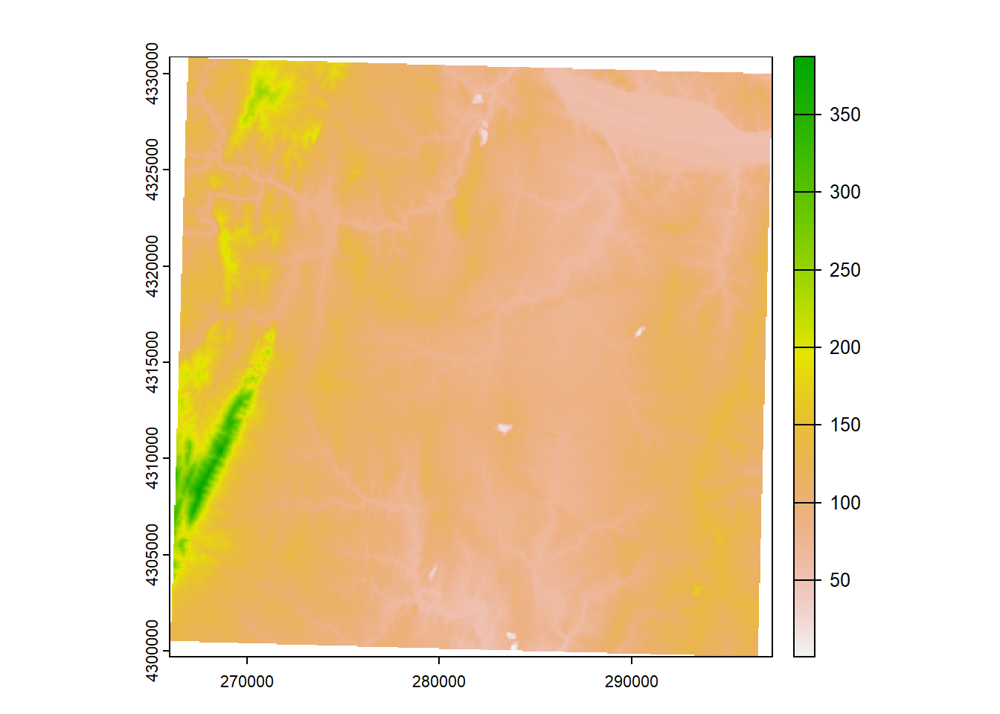

3 Part 3
3.1 Determine ground heights underneath sample volumes
Now that you have a basegrid made, we will overlay it with a Digital Elevation Model (DEM) to determine the mean ground height underneath each sample volume. Determining ground heights under sample volumes is important for estimaitng beam heights and topographic blockage later.
## Grab DEM data using elevater package
dem <- get_elev_raster(my_spatial_polys_rp, z = 10)
dem<-rast(dem) #convert it to a SpatRaster
## Plot it
plot(dem)
## Perform Zonal stats
base_dem<-st_transform(my_spatial_polys_rp,crs(dem))
base_sf1<-rasterize(base_dem,dem,field="id")
demz<- data.frame(zonal(dem,base_sf1,fun='mean'))
demz$groundht <- round(demz[,2], -1) ##round DEM to nearest 10-meters
demz<-demz[,c(1,3)]
my_spatial_polys_rp <- merge(my_spatial_polys_rp, demz, by.x='id',all.x=T)
my_spatial_polys_rp$groundht[my_spatial_polys_rp$groundht<0]<- 0
my_spatial_polys_rp$groundht[my_spatial_polys_rp$groundht=="NaN"]<- 0
my_spatial_polys_rp$groundht<-na_locf(na_locf(my_spatial_polys_rp$groundht))
## Save as a shapefile
st_write(my_spatial_polys_rp, paste0(OUT,"/",site,"_",maxrange/1000,"km_super_grid.shp"), append=FALSE)## Deleting layer `KLWX_5km_super_grid' using driver `ESRI Shapefile'
## Writing layer `KLWX_5km_super_grid' to data source
## `C:/Users/jbule/Dropbox/RAW_2022/KLWX_5km_super_grid.shp' using driver `ESRI Shapefile'
## Writing 9360 features with 4 fields and geometry type Polygon.3.2 Load basgrid polygon into QGIS - easy way
Via Browser Panel:
1. When you open QGIS, there will be two windows on the left side: Browser Panel and Layers Panel
2. Navigate in the Browser Panel to the file you'd like to add to QGIS.
3. Click on the basegrid shapefile you just created (probably called "KLWX_5km_super_grid.shp") and drag it into the Layers Panel or double-click it.3.3 Changing the layer properties to display data
1. In the Layers Panel, right-click on the basegrid shapefile and click Properties
2. A new window will open. Click Symbology in the left-side menu.
3. At the top of the window, click the down arrow and click on Graduated
4. Under Column, find the column name "groundht" to display.
5. Under Symbol, click on the bar to Change and click Simple fill. Click the down arrow on the Stroke Color bar and click Transparent Stroke.
6. Pick a color ramp you like or create one using the Edit button next to the Color ramp
7. Under Classes, click Classify. You can adjust the Mode of classification (e.g., Equal Interval) and the number of Classes (e.g., 10).
8. Click OK when you are happy with your selections.